Official programme: drive to Lake Sevan (the largest lake in the Caucasus) with monastery stops, then on through Molokan villages with a traditional tea break, overnight stay in Haghpat overlooking the Debed Gorge.

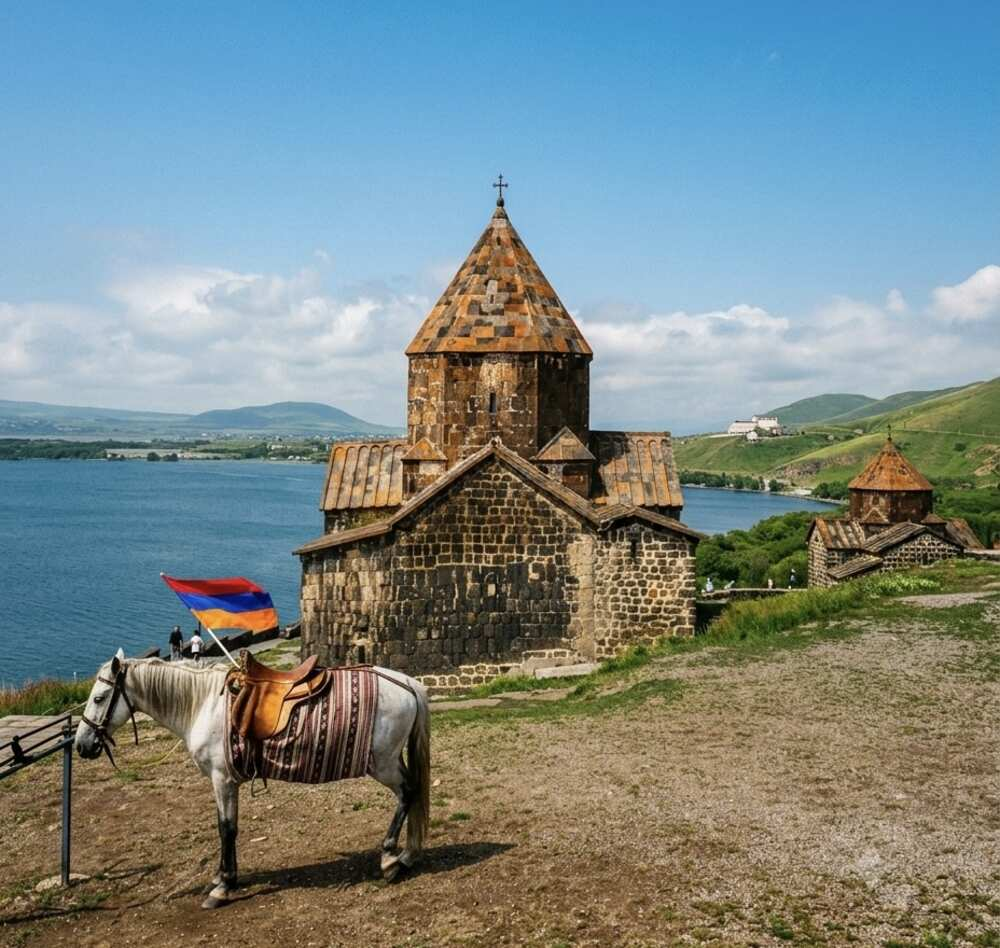
A horse posing for photos at the monastery entrance, with both churches of the complex in the background – Surb Arakelots and the smaller Surb Astvatsatsin.
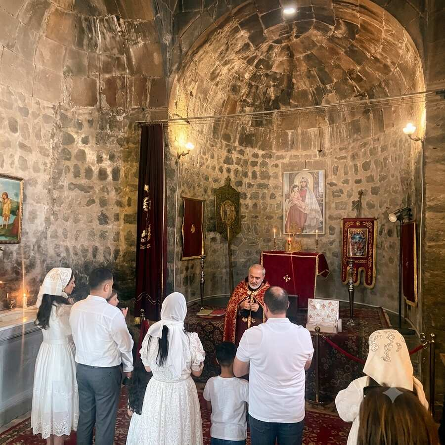
A service in progress inside the church – Sevanavank is not a museum but still an active place of pilgrimage with regular services.
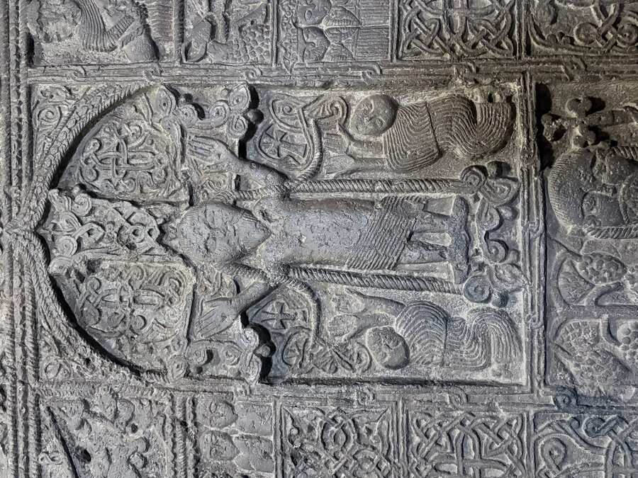
Close-up of a khachkar (cross-stone) – several of these intricately carved stones stand on the monastery grounds.

Background on the Molokans: A Russian religious community exiled to the Caucasus in the 19th century for deviating from the Orthodox Church. The name comes from "moloko" (milk) – they drank milk even during Orthodox fasting periods. To this day they maintain their own villages with their own culture in Armenia.
Lunch with the Molokan community: A stop at a Molokan house in one of the villages north of Lake Sevan – group photo in the courtyard, plus a local book about the community ("Молокане: Маленькая Россия на севере Армении" – "Molokans: Little Russia in the North of Armenia") showing everyday photos from the villages: tractors, field work, home-baked bread.
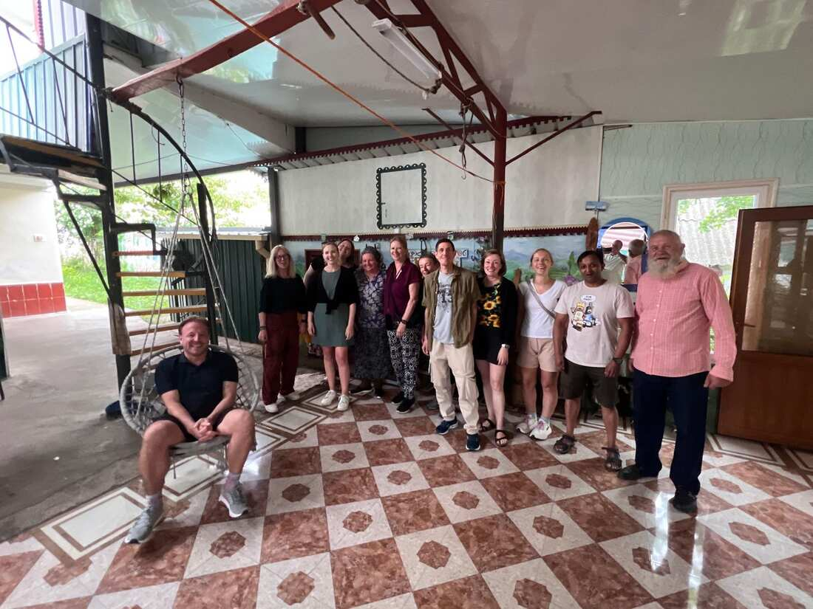
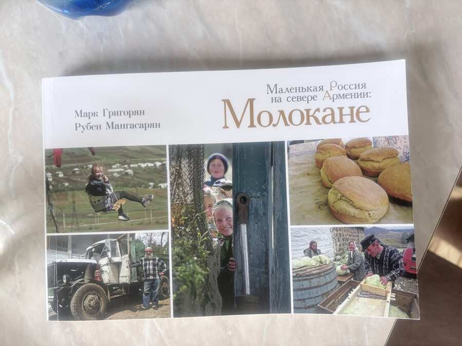

Children on the village street – everyday life in a Molokan village, just a few kilometres from Yerevan and yet a different world.
Dilijan – the “Armenian Switzerland”: A spa town set in coniferous forest at 1,500 m, a summer retreat for Moscow officials since Soviet times and a refuge for artists and writers. According to legend, it is named after a shepherd called Dili, whom his master had killed because he had fallen in love with the master's daughter – his mother is said to have wandered the valleys for days, wailing “Dili jan, Dili jan” (“jan” is an Armenian term of endearment, roughly “dear”).
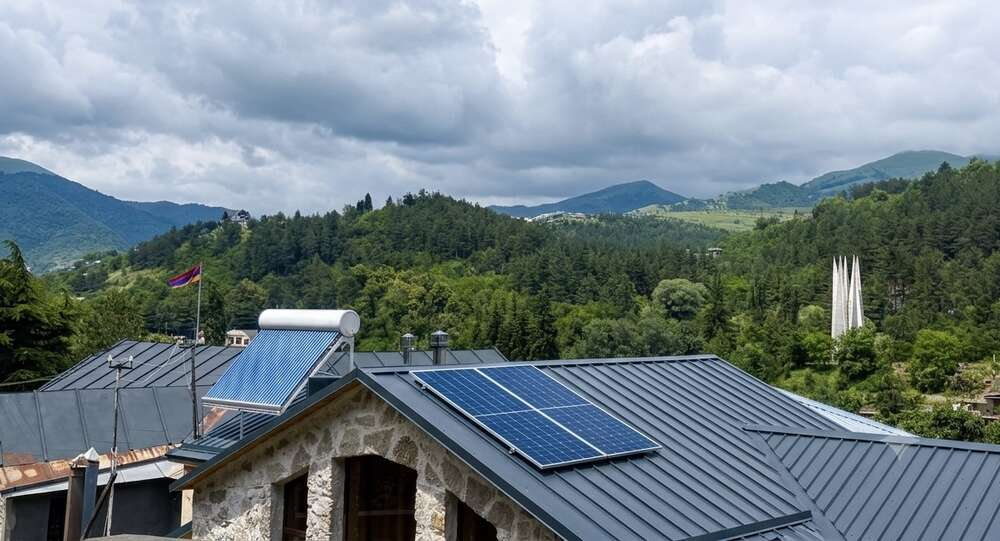
View across the rooftops: solar panels and solar water heaters are now part of the streetscape – a visible sign of how much investment capital has flowed into this small town over the past two decades.
Sharambeyan Street: The supposed “old town” in the centre is, to be honest, not an organically grown quarter but a stage set reconstructed by the Tufenkian Foundation, made up of early-20th-century houses with wooden balconies – hotel, museum and souvenir lanes all in one. If you know that, you can still enjoy it – just with a more realistic eye than the average guidebook suggests.

Reception of the Tufenkian hotel complex on Sharambeyan Street – carved balconies, rough stone, a recreated 19th century.
Insider fact: At the roundabout in the centre stands a Soviet monument to the cult film Mimino (1977) – even though the film wasn't shot in Dilijan at all. The town is mentioned in just a single line of dialogue: an Armenian boasts that his tap water is the second best in the world after San Francisco's. That one sentence was enough for the locals to build their town its own monument – a very Armenian blend of self-irony and local pride.
Revival with oligarch money: The strikingly good infrastructure – solar installations, renovated parks, the elite private school UWC Dilijan with students from more than 80 countries – is largely down to the IDeA Foundation of investment banker Ruben Vardanyan and his wife Veronika Zonabend, who have poured around 236 million US dollars into the town since the 2000s. A bitter footnote to the current situation: Vardanyan has been imprisoned in Baku since 2023 – one of the most prominent Armenian detainees in the context of the Karabakh conflict, while his town continues to be regarded as Armenia's showcase for education and tourism.

A bit of clowning around is part of the culture too: an old Soviet GAZ truck with a crane mount, parked in the middle of the street as a photo prop – not a museum piece, but simply part of the townscape.
Alaverdi – the dead copper town: Driving through the Debed Gorge, this scene suddenly appears: an entire industrial town built into a narrowing canyon, dominated by a brick chimney, with the snow-capped peaks of the Lesser Caucasus behind it. The copper smelter was founded in 1770 under the Georgian king Erekle II and around 1900 supplied roughly a quarter of all the copper in the Russian Empire. In Soviet times, Alaverdi was one of the most important industrial sites in the South Caucasus.
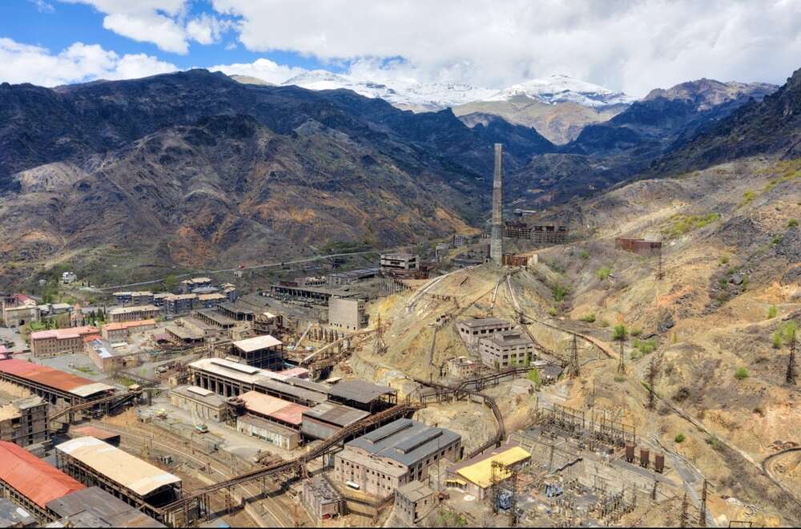
Operations ceased for good in 2018 – officially for failing to meet environmental standards, after decades of smelting had contaminated the soil, air and the Debed river. What remains is one of the most striking industrial ruins in the Caucasus: too big and too toxic to demolish, too expensive to clean up. A symbol of the rupture that many regions of Armenia have experienced since 1991 – whole towns that lived off a single Soviet enterprise and were left without an alternative when it closed.
Context: Directly above this gorge sit the UNESCO monasteries of Haghpat and Sanahin – so within a single field of view you have millennia-old church architecture and the ruins of a 250-year-old copper industry. This contrast of spirituality and heavy industry packed into such a small space is typical of the Lori region and rarely experienced as compactly as here.
Sanahin Monastery: Just four kilometres from Haghpat, on the other side of the same gorge, lies its sister monastery Sanahin – both founded around 966/976 by Queen Khosrovanush. The name literally means “this one is older than that one” – a still-unresolved rivalry between the two monasteries over which is the elder. A UNESCO World Heritage Site since 1996, together with Haghpat.
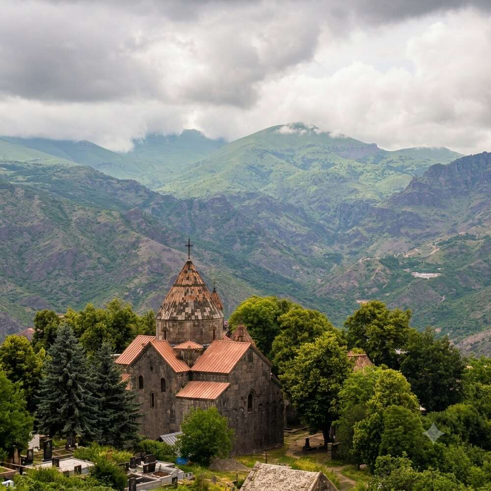
Church and conical dome of Sanahin, with the same ranges of the Lesser Caucasus in the background as over at Haghpat – the two monasteries are literally within sight of each other.
Gavit and book depository: The three-nave gavit in front of the Surb Astvatsatsin church was built in 1211 by Prince Vache Vachutyan – two rows of three differently decorated columns divide the space. Also remarkable is the book depository built in 1063, with its richly decorated dome and central light shaft, where khachkars and liturgical stone fragments are on display today.
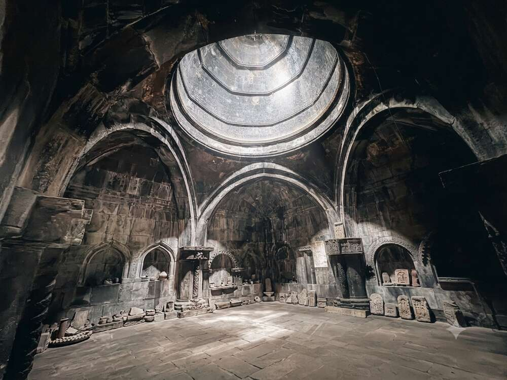
Sanahin's book depository: tiered dome rings above a room full of khachkars and stone fragments – once a storehouse for precious manuscripts, today a kind of lapidarium.

The gavit of Sanahin by candlelight – three naves, countless columns, every single one topped with a different capital.

View through the tiered round-arched arcades out to the khachkars in the monastery courtyard – the interplay of light and shadow is just as striking in Sanahin as in Haghpat.
Insider fact: The brothers Anastas and Artem Mikoyan were born in the village of Sanahin, right next to the monastery. Anastas rose to become the long-serving head of state of the Soviet Union (chairman of the Supreme Soviet, serving from Lenin to Brezhnev – hence the Russian saying “from Ilyich to Ilyich without heart attack or stroke”). His brother Artem, together with Mikhail Gurevich, developed the legendary MiG fighter jets – the “Mi” in MiG stands for Mikoyan. As a child he learned to read and write from a monk at Sanahin Monastery. A small Mikoyan brothers museum in the village today displays, among other things, a MiG-21.
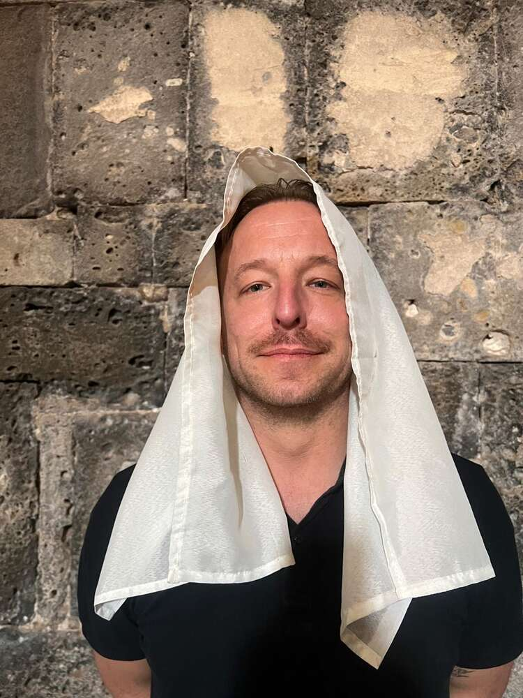
Being a bit silly is part of it too: a liturgical cloth from the church repurposed on the spot as headgear – the monastery walls of Sanahin as a photo backdrop.
Haghpat Monastery: Built halfway up the slope above the Debed Gorge, founded in 976 by Queen Khosrovanush – wife of the Bagratid king Ashot III and also the founder of the sister monastery Sanahin, four kilometres away on the other side of the gorge. The name roughly means “strong wall” or “solid roof” – Haghpat was always a fortified monastery, not just a place of prayer. A UNESCO World Heritage Site since 1996, together with Sanahin.

The Surb Nshan church (Church of the Holy Cross, 976–991) with its characteristic conical dome is the oldest part of the complex – in the background the Lesser Caucasus, which separates Georgia from Armenia.
The gavit: Built around 1210 on the site of a mausoleum, Haghpat's narthex is a gavit typical of medieval Armenian church architecture but unusually large – assembly hall, lecture room and burial place in one. The roof rests on four central columns, pierced by the “yerdik”, a central roof opening through which light falls in tiered rings onto the stone floor – a design that goes straight back to the Armenian tradition of building in wood.

Light shaft in the gavit: tiered, richly decorated stone rings around the central roof opening – one of the most impressive constructions of medieval Armenian architecture.
Apse fresco: In the main church, the apse fresco shows Christ as Pantocrator (ruler of the world), commissioned by the Armenian prince Khutulukhaga, whose own portrait can be found in the southern transept – an early example of secular donors immortalising themselves in religious imagery.

Christ Pantocrator in the apse of the Surb Nshan church, surrounded by figures of saints – the pigments are more than 900 years old and still clearly visible.
Insider fact: Sayat-Nova, Armenia's most famous poet and troubadour of the 18th century (known for his love songs in Armenian, Georgian and Azerbaijani), spent his final years as a monk behind the walls of Haghpat – fleeing court intrigues in Tbilisi. If you're interested in Armenian-Georgian cultural history: the director Sergei Parajanov (museum in Yerevan, see Day 1) dedicated the 1968 film “The Color of Pomegranates” to him.

The free-standing, three-storey bell tower (1245) at the highest point of the complex – one of the oldest of its kind in Armenia, together with the identical tower at Sanahin.
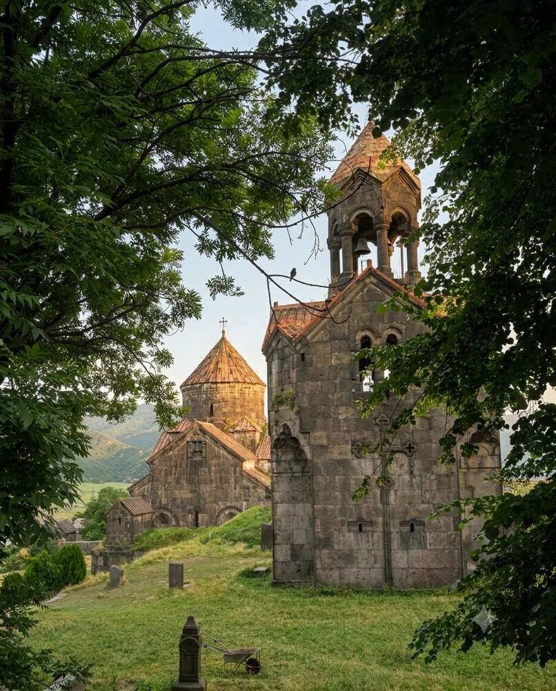
Church and bell tower, framed by the foliage of the monastery trees – evening light shortly before we drove on towards Georgia.